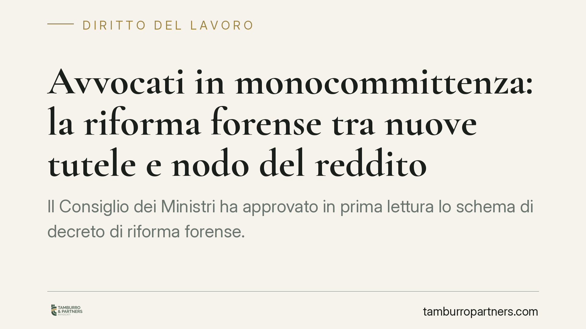

Avvocati in monocommittenza: la riforma forense tra nuove tutele e nodo del reddito
Il Consiglio dei Ministri ha approvato in prima lettura lo schema di decreto di riforma forense. Per la prima volta vengono disciplinate monocommittenza e collaborazione continuativa degli avvocati: contratto scritto, compenso congruo e tutele per malattia e genitorialità. Resta però aperto il nodo più delicato, quello della copertura del reddito nei periodi di sospensione dell'attività.

Il quadro
Lo schema di decreto legislativo di riforma della professione forense, approvato dal Consiglio dei Ministri in prima lettura, interviene su una fascia di professionisti finora priva di tutele specifiche: gli avvocati che collaborano in modo stabile e continuativo con un unico committente, tipicamente uno studio più strutturato.
Si tratta di una condizione diffusa, soprattutto nei primi anni di carriera, che fino ad oggi viveva in una zona grigia: formalmente lavoro autonomo, nei fatti una dipendenza economica da un solo soggetto. Lo schema tenta di dare a questa figura un perimetro giuridico.
Un'avvertenza preliminare è doverosa: il testo è in prima lettura e dovrà completare l'iter di approvazione. I contenuti, comprese le soglie e le percentuali, possono ancora cambiare.
Inquadramento normativo
L'intervento si innesta sulla Legge 31 dicembre 2012, n. 247 (la legge professionale forense), che all'articolo 2 definisce la professione e all'articolo 1 rinvia a fonti secondarie e deleghe per la disciplina di dettaglio. Lo schema in esame si colloca in questo solco, introducendo una regolazione dei rapporti di collaborazione continuativa tra avvocati.
Il punto qualificante è la nozione di monocommittenza: la condizione del collaboratore che trae la parte prevalente dei propri compensi da un solo committente. Le soglie quantitative precise — la percentuale e il periodo di riferimento — derivano dal testo in iter e potrebbero essere riviste nei passaggi successivi. È bene quindi trattarle come dato provvisorio e non come definizione già consolidata.
Secondo le bozze circolate, lo schema prevede l'obbligo di contratto scritto, un compenso congruo e una tutela della continuità del rapporto in caso di malattia e genitorialità per un periodo che le ricostruzioni indicano intorno ai 180 giorni. Il dato numerico e la sua esatta portata — se cioè si tratti di non risolubilità del rapporto o anche di indennità economica — vanno confermati sul testo definitivo, non essendo univocamente verificabili allo stato.
Monocommittenza e collaborazione continuativa: cosa cambia
La novità reale è il riconoscimento. Per la prima volta la collaborazione continuativa degli avvocati esce dall'indeterminatezza e riceve regole minime. Contratto scritto significa trasparenza su oggetto, durata, compenso e cause di recesso. Compenso congruo significa un argine agli accordi al ribasso.
La tutela in caso di malattia e genitorialità protegge il rapporto: il collaboratore non può essere estromesso per il solo fatto di essersi assentato nel periodo protetto. È un presidio contro la precarietà più brutale.
Il limite, però, è sostanziale. La protezione riguarda la continuità del rapporto, non necessariamente il reddito nei periodi di sospensione. In altri termini: il rapporto non si interrompe, ma nulla garantisce che durante l'assenza arrivi un compenso sostitutivo. È la differenza tra conservare il posto e conservare il reddito — una distinzione tutt'altro che teorica per chi vive del proprio lavoro.
In questo scenario la Cassa forense resta il principale presidio economico residuo, attraverso le prestazioni assistenziali e previdenziali previste dai suoi regolamenti. Un presidio importante, ma non equivalente a un'indennità strutturale legata al rapporto di collaborazione.
Implicazioni pratiche
Per il collaboratore, cambia la forza contrattuale: poter invocare un contratto scritto e un compenso congruo sposta l'equilibrio. Ma resta l'onere di organizzarsi autonomamente la copertura dei periodi non produttivi.
Per lo studio committente, emerge un fascio di obblighi formali e sostanziali da gestire con attenzione, anche per evitare contestazioni future sulla natura del rapporto.
Cosa fare in concreto
- Verificate la forma del rapporto: se collaborate in modo stabile con un solo studio, mettete per iscritto oggetto, durata, compenso e preavviso di recesso.
- Misurate la vostra posizione: calcolate quale quota dei compensi proviene da un unico committente, per capire se rientrate nella nozione di monocommittenza.
- Costruite una copertura del reddito: valutate strumenti di protezione autonoma per i periodi di sospensione, senza fare affidamento esclusivo sulle tutele del rapporto.
- Verificate le prestazioni di Cassa forense: informatevi sulle indennità assistenziali disponibili e sui relativi requisiti.
- Seguite l'iter: è opportuno monitorare i passaggi parlamentari, perché soglie e tutele possono ancora essere modificate prima dell'entrata in vigore.
Disclaimer
Contributo informativo a cura di Tamburro & Partners – Avv. Giuseppe Tamburro. Non costituisce parere legale.
Ogni storia di lavoro ha i suoi tempi.
Se gestisci HR e vuoi un confronto su contenzioso, ispezioni o licenziamenti, scrivi allo studio. Ti rispondiamo entro un giorno lavorativo.